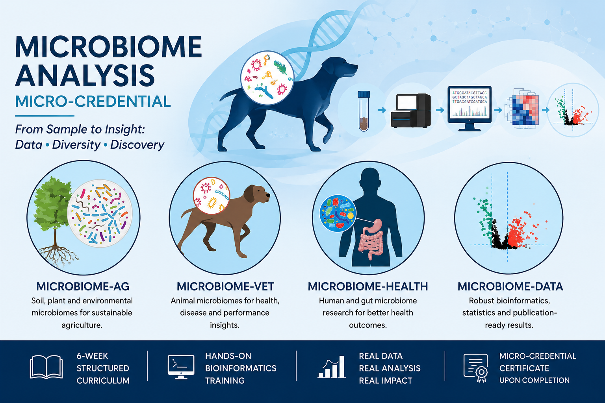

Schedule

All sessions are part of the Microbiome Analysis Micro-credential.
Week 1: The Microbiome & How We Study It
| Week 1 |
Theory |
- Introduction to microbiomes and ecological relevance
- Microbiome hypotheses and biological interpretation
- Understand amplicon vs shotgun metagenomics approaches
- Learn the workflow from sample → sequencing → data
- Overview of microbiome bioinformatics workflows
|
Week 2: Two Bioinformatics Workflows for Microbiome Analysis
| Week 2 |
Theory |
- Understand microbiome file formats and metadata
- Learn experimental design considerations
- Compare 16S/ITS and shotgun metagenomics workflows
- Introduction to QIIME2, DADA2, Kraken2, Phyloseq and HUMAnN3
- Choose appropriate workflows for biological questions
|
Week 3: Quality Control & Data Preparation
| Week 3 |
Hands-on Workshop |
- Interpret FASTQ files and sequencing quality scores
- Prepare metadata for microbiome analysis
- Import sequencing data into QIIME2
- Visualise read quality and trimming decisions
- Document reproducible quality control workflows
|
Week 4: From Reads to Taxonomy
| Week 4 |
Hands-on Workshop |
- Perform DADA2 denoising and ASV generation
- Understand feature tables and representative sequences
- Assign taxonomy using SILVA databases
- Generate taxonomic composition visualisations
- Apply workflows to research microbiome datasets
|
Week 5: Diversity Analysis & Differential Abundance
| Week 5 |
Hands-on Workshop |
- Explore alpha diversity and beta diversity analysis
- Interpret NMDS and PCoA ordination methods
- Apply statistical testing (PERMANOVA and Kruskal–Wallis)
- Perform DESeq2 differential abundance analysis
- Generate publication-quality microbiome figures
|
Week 6: Visualisation, Integration & Scientific Writing
| Week 6 |
Hands-on Workshop |
- Create publication-ready ggplot visualisations
- Explore microbiome networks and keystone taxa
- Interpret microbiome findings in a biological context
- Write microbiome Methods and Results sections
- Assemble publication-ready figure panels
|